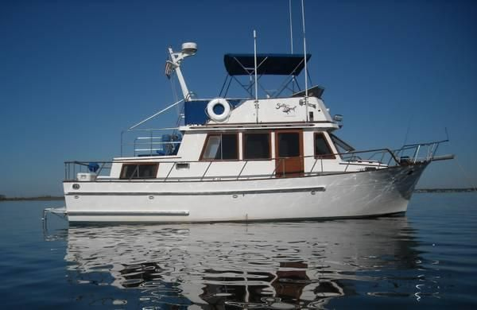

B-Scout Boat Guide · CHBY-35
CHB 35 Sundeck Sundeck
1983–1986
The CHB 35 Sundeck is a compact aft-cabin flybridge cruiser that places a covered aft deck and two-cabin accommodation into a 35-foot hull. It uses traditional teak interior finishes and displacement-speed diesel operation, with the elevated sundeck arrangement emphasizing living space over a low profile.

- Length
- 35 ft
- Beam
- 11.75 ft
- Draft
- 3.67 ft
- Hull behaviour
- Semi-Displacement
- Fuel
- Diesel
- Propulsion
- Shaft
- Engine configuration
- Single Inboard
- Boat family
- Trawler
- Construction
- Fiberglass
Best for
- Couples wanting an aft-cabin layout below 36 feet
- Liveaboard or extended-cruising buyers prioritizing interior volume
- Owners comfortable maintaining an older Taiwan-built trawler
Trade-offs
- High profile and windage affect docking and bridge clearance
- Exterior teak and aging deck or window structures require surveillance
- Engine-room and service access are tighter than on larger trawlers
- Individual builder and equipment variation is significant
Known concerns
- No model-specific concern has been promoted to B-Scout’s evidence threshold. This does not mean the model has no age-, condition- or hull-specific risks.
Inspection focus
- Moisture-test teak-deck fasteners, deck penetrations, window surrounds and cabin-house joints
- Inspect fuel tanks, fill and vent hoses, supports and access for corrosion or leakage
- Inspect original wiring, shore-power equipment, bonding and later electrical modifications
- Inspect exhaust systems, engine mounts, shafting, rudders and steering gear
- Confirm builder, model configuration and major refit history from hull documentation
Continue researching
Related boat models
CHB 34 Double Cabin Double Cabin
33.5 ft · Semi-Displacement
CHB 40 Double Cabin Double Cabin
40 ft · Semi-Displacement
CHB 34 Sedan
33.5 ft · Semi-Displacement
CHB 34 Tri-Cabin
33.5 ft · Semi-Displacement
Seahorse Coot 35 Steel Pocket Trawler
35 ft · Semi-Displacement
Cheoy Lee 35 Trawler Trawler
34.92 ft · Semi-Displacement
About this record
B-Scout preserves uncertainty: missing information remains unknown rather than being treated as a negative. Specifications and guidance describe the model record; individual boats can differ by year, equipment, refit and condition.